Episode 132: New Years Resolutions - Well it's the New Year and most of us have at one time or another made (and probably broken) a New Year's Resolution or two, so it only seemed right that ImaNewbie should honor this tradition. As the episode opens ImaNewbie and ImaDufus are sitting in a tavern discussing ImaNewbie's plan for the new year.
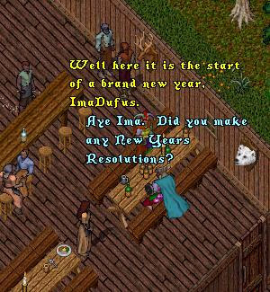
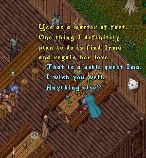
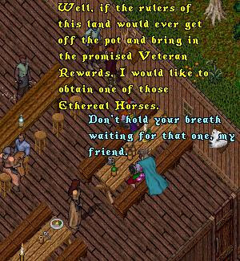
I just couldn't resist a quick prod at OSI to hurry up
with the Player Rewards! I know they are in
testing on Sonoma right now but sheesh, they have
been in testing on Test Center for weeks and been
promised for months. Let's "Just do it!" already.
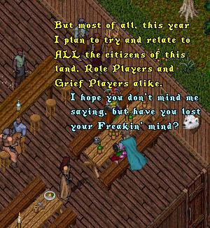
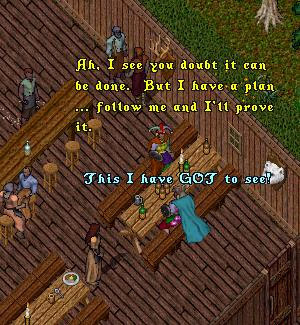
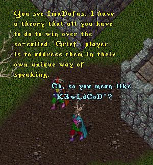
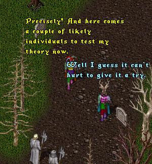
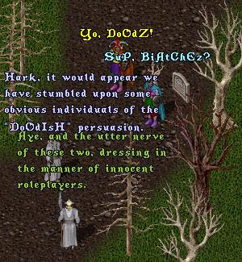
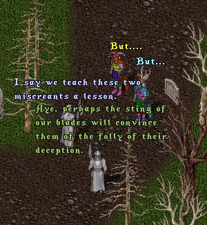
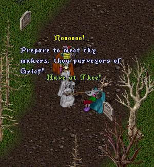
Later at the Healers....
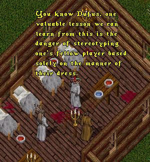
This idea came to me from some of you who emailed and said "Hey, how come you always portray PK's and Grief Players as people wearing Deathrobes and Skull masks?" and Yes, I know a lot of people who wear that outfit are not all PKs so this 'toon is just to teach ImaNewbie (and me) not to Stereotype our fellow players.